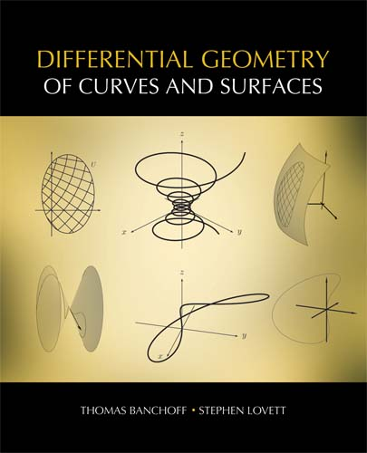

Errata for the printed book
The computer graphics applets provided below illustrate many concepts and theorems introduced in the book
Differential Geometry of Curves and Surfaces. Though one can explore the computer demos independently of the text, the two are intended as complementary modes of studying the same material. The graphical applets can provide motivation for certain definitions, allow the reader to explore examples further, and give a visual explanation for complicated theorems.
See the
tutorial for details about using the applets. Each demo also comes with some explanatory text. The applets are designed to be intuitive, so that after using just one or two (and reading the supporting text), any reader can quickly understand their functionality. However, the applets are extensible in that they are designed with considerable flexibility so that the reader can often change whether certain elements are displayed or not. Often, there are additional elements that one can display either by accessing the
Controls menu on the control window or the
Plot →
Add Plot menu on any display window.
The applets come in two versions: the original version from the time of the book’s release, which corresponds directly to the printed text, and the revised version, which includes refinements and enhancements such as rainbow gradation in lines and surfaces indicating relationships with the changing variables.
Applet Instructions - Please Read!
We recommend using our site with Firefox or Internet Explorer. Starting with Chrome version 42 and above (released April 2015), Chrome has disabled the standard way to which browsers support plugins. Read more
Windows Instructions
- In Windows, open the Control Panel
- In the Programs subfolder of the Control Panel, click on the Java icon to open the Java Control Panel
- In the JVC pane, select the security tab
- Click the "Edit Exception Site List"
- Add "http://diffgeo.akpeters.com" to the list
- Open browser and navigate to the applet page
- Allow the browser to run the Java applet when requested
Mac OSX 10.8 and greater instructions
- On Mac OS X 10.8 and greater, open the System Preferences.
- Click on the Java icon to open the control panel (it will open in a second window)
- Click the Security tab
- In the section titled Exception Site List, click Edit Site List button
- Click the Add button and add "http://diffgeo.akpeters.com" to the list
- Click OK to close panel. It will warn about http:// being insecure (vs. https://). Accept anyway.
- Open browser and navigate to the applet page
- Allow the browser to run the Java applet when requested